Simkaye 🌈
· ♥ 619 likes · 💬 12
Our staff is hard at work on your divination! We will be with you momentarily.
Our staff is hard at work on your divination! We will be with you momentarily.
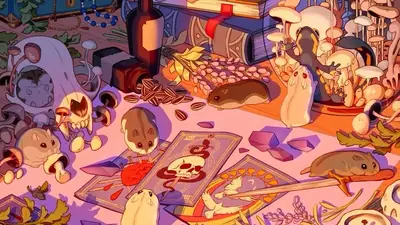
Deadlock cock chart this is gonna be in the next patch, trust me, yoshis uncles cousins pet rat told me
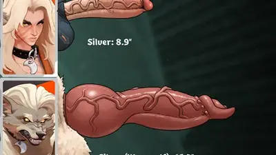
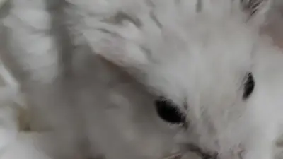
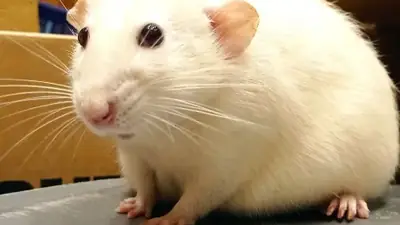
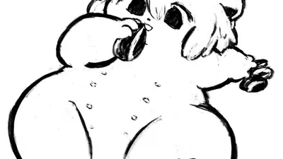
For #ThrowbackThursday this week, it’s the Londonfurs summer party held on July 20th, 2019. The event was held in Tank & Paddle, Minster Court. 1/4
Full bodies of the latest members within the Ninjaverse Kako the 3 tailed Kitsune Iori the Ninja hamster Shio the Snail Yokai (adopt bought from @zitoisneato.com ) #digitalart #anthro #kitsune #fox #hamster #snail
おはようございます〜🧟♂️ うちの長毛ハムスターの毛が日に日に伸びてる。 もともと子供からの成長で伸びてる+冬が近づいてるってのもありそう。 ほとんど毛皮のコートを羽織ってるみたいですごい🤭 毛繕いが大変そう😂 #AIイラスト
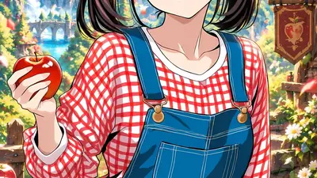
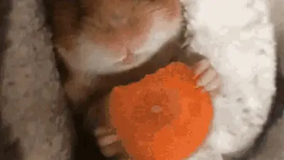
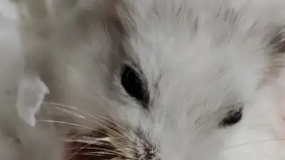
Call it my feed because i lap up ur posts like a hamster in its cage
Quercy was very concerned this morning, rocketing around the cage in an attempt to get my attention. Turns out he was concerned about my hangnnail. #petRats #rats
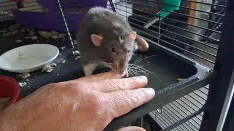
rewatchinh newest steel ball run everytime i see johnny i have biggest urge to do this to him
how i say "i love and respect you and you are my favorite person" this gif its also my fav gif
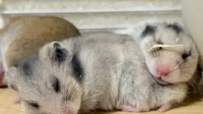
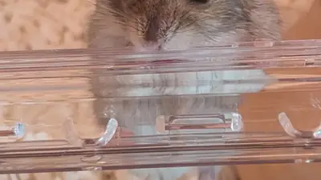
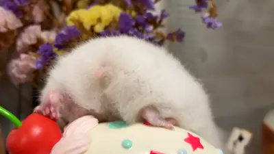
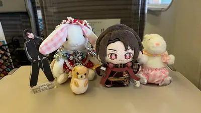
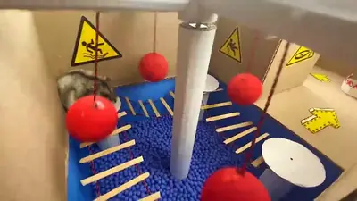
YouTube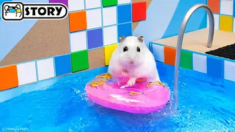
YouTube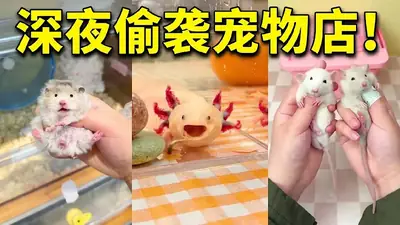
YouTube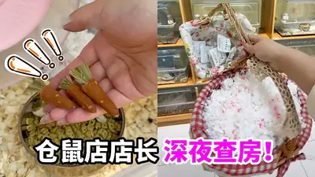
YouTube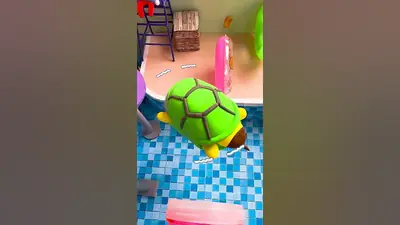
YouTube YouTube
YouTube
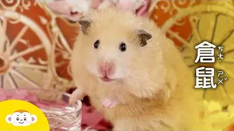
YouTube